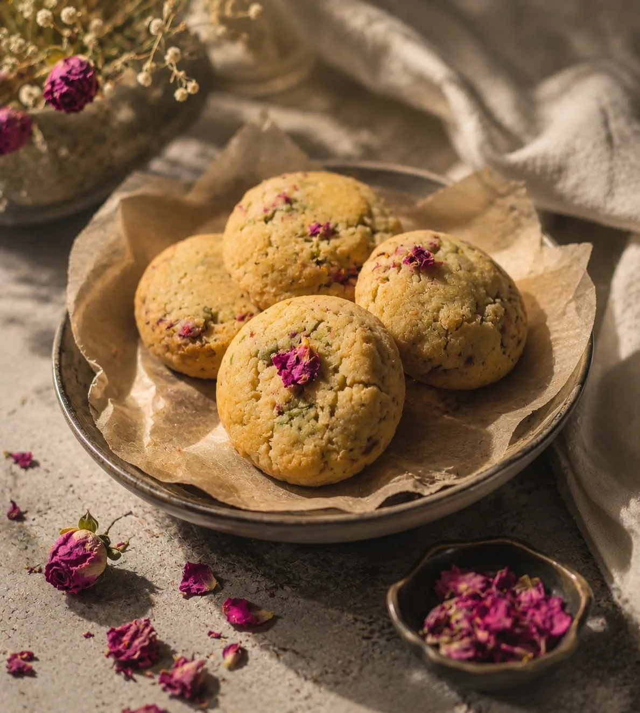

The Damascene.
White chocolate, Aleppo pistachio, dried Damascene rose. Syria, in one bite.

The story
Born from a craving.
It started with a craving our founder, Dania Ayoubi, simply couldn't satisfy. She searched everywhere, found nothing — so she started testing in her own kitchen, batch by batch.
The name
Named after Damascus.
NASH had gathered flavors from around the world, but Syria deserved its own place on the menu. Damascus — city of the Damascene rose — gave the cookie its name and its soul.
Three ingredients
What's inside.
- White Chocolate
Sweet, creamy and melting through every bite.
- Aleppo Pistachio
Rich, green and unmistakably Syrian.
- Damascene Rose
The rose that carries the city's name — dried petals in every cookie.
Syria, in one bite.
The cookie jar